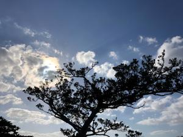
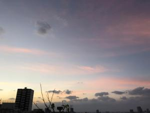

うるがいの話 ある日
最新: まくらおとし【うるがいの話 ある日】とは 一日だけのプログです
『うるがいの話』の最新一日だけのプログで、通信料が少なく経済的だ。カニの画像をクリックすると全ての日付が載る『うるがいの話』サイトを表示します
|
|
【うるがいの話】 うるがい(ｳﾙｶﾞｲ urugai)とは、『もずくがに』の名前でとても大きくなります。 |
|---|---|
|
|
【カミマヤーの話】 猫のことを方言でマヤーといいます。カミマヤー（kamimayaa）とは、神の猫のことです。 |
|
【たながぁの音楽】 たながぁ（ﾀﾅｶﾞｰ tanagaa）とは手長えびのことで、何種類かあり大きいのは車 エビぐらいになります。 |

|
【ぶながぁの話】 ぶながぁ(ﾌﾞﾅｶﾞｰ bunagaa)とは、赤い髪の毛、赤い身体、そして身長は１ｍ２０ｃｍ ぐらい、川の蟹を食べているの目撃された。場所は沖縄県国頭郡大宜味村のと ある村僕の隣近所に住んでいる爺さんから、聞いた話です。 |
|
|
【ギーマの話】 ギーマ(giima)とは、山原の里山に咲くスズランに似た、 花を付けます。実は食べられます、 気が付くと口の周りが紫になっています。 |
2022年10月25日 (火）まくらおとし
17:50
 
ネットで『まくらおとし』という単語を調べるが、枕経（まくらきょう）や枕
直しというのはあるが、『まくらおとし』は無い。
日本文学100年の名作 第8巻 1984-1993 薄情くじら (新潮文庫)。
極楽まくらおとし図 深沢 七郎 (著) より引用
もう一つの息子（リョーさんの、社長と呼んでいる）の用事というのは、本家
のジイさん（枕おとしで逝くリョーさん）が、養老院へ行くことになったが、
「死んでも行かない」と言っているそうだ。なにしろ、養老院へ行くというの
は「牢屋か、ケイム所へ行く」と思い込んでいるそうである。
＞＞ヨメのお母さんは、老人ホームだけは絶対行かない！、連れていくのなら
自殺するとまで言っている、ウーン、似ているな
「ワシは、まくらおとしで死にてえものだ、養老院などで死ぬのはいやだよ」
と言う。リョーさんはワシ（リョーさんと親戚関係）に両手を合わせて、仏さ
までもおがむように、「ヒイじいさんのオヤジさんは、まくらおとしで死んだ
けど、いい死にかただったそうだよ」と言って、ワシに向って、また、手を合
わせた。「ワシは、きっと、まくらおとしで、な、仏さまに頼んでくれよ」と
言う。
・・・・・・・・・・・・・・
社長がまくらを手に持った。持ちあげてリョーさんの胸に当てた、ワシがあわ
てて、胸のまくらをリョーさんの首の上にのせた。やせているので、細い首で
、ワシと社長はまくらの両はしを押さえた、ぐーっとちからをいれた。ワシは
、はげしく首をふった。ワシはヒザをまくらの上にのせた。ぐーっと、ちから
をいれようとすると、社長の手がのびて、ワシのヒザをもちあげた。こんどは
社長がヒザをまくらの上にのせた。ぐーっとまくらが平たくなっていく。ワシ
のヒザのちからより社長のヒザのほうがちからがあった。実の子がちからをこ
めているからだ。白いサラシはゆれもうごきもしない。「社長はぼーっとして
いたが、ヒザをもちあげて、おがむように首のまくらをはずした。
『まくらおとし』とは、フィクションなのか・・・、いやそうとも言い切れな
いかも。ヨメのお母さんは、『亡くなった旦那さんに早く、お迎えにきてあの
世に連れていって』と眠る前にお願いしていると言う。ヨメは介護に疲れ、マ
ンションに泊まることは止めた。
１７時４７分 ビットコインの総資産 ￥８、３２４↓